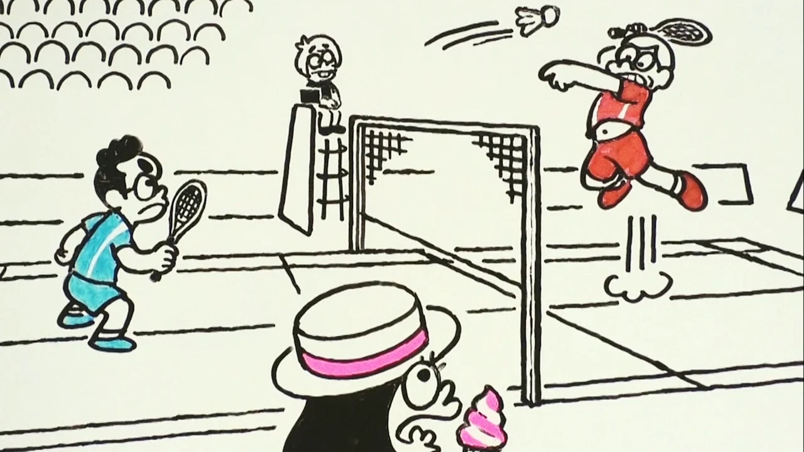
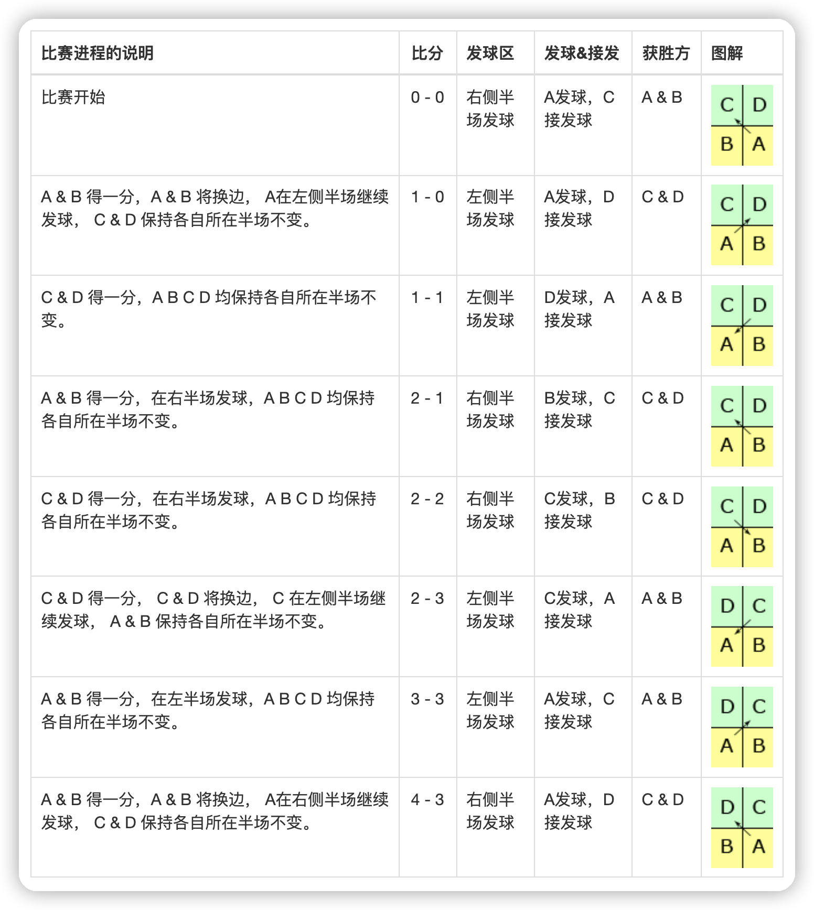
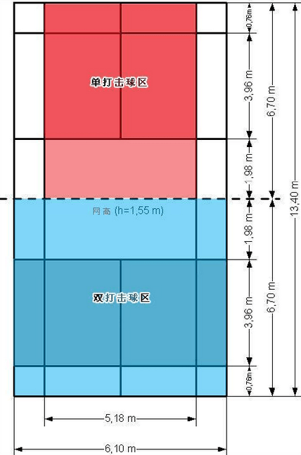
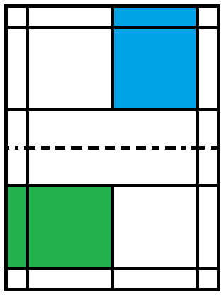
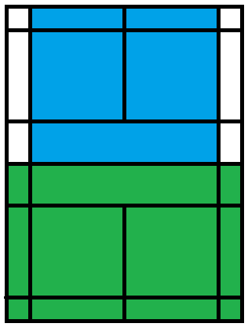

我悄悄的来，又悄悄的走，挥一挥球拍，不留一个活口！
之前对于羽毛球比赛的规则并不是很明确，所以在网上搜了下，发现了 vxixi 里面有比较详细的整理，很适合入门或对于比赛规则不熟悉的朋友来阅读和学习。文章内容，主要是翻译国际羽联 2021 年最新羽毛球比赛规则汇总而得。

羽毛球比赛计分规则
从羽毛球比赛规则出发，需要严格遵循！
- 21 分制，3 局 2 胜为佳
- 每球得分制
- 每回合中，取胜的一方加 1 分
- 当双方均为 20 分时，领先对方 2 分的一方赢得该局比赛
- 当双方均为 29 分时，先取得 30 分的一方赢得该局比赛
- 一局比赛的获胜方在下一局率先发球
比赛休息与换边规则
从羽毛球比赛规则出发，需要严格遵循！
- 在一局比赛中，当领先的一方达到 11 分时，双方有 60 秒休息时间
- 在两局比赛间，双方有 2 分钟的休息时间
- 在决胜局的中，当领先的一方达到 11 分时，双方交换场地
羽毛球比赛单打规则
从羽毛球比赛规则出发，需要严格遵循！
- 在一局比赛开始时(0:0)或发球方得分为偶数时，发球方在右半场进行发球，当发球方得分为奇数时，在左半场进行发球
- 如果发球方取得一分，那么下一回合其继续发球
- 如果接发球方取得一分，那么下一回合其成为发球方
羽毛球比赛双打规则
从羽毛球比赛规则出发，需要严格遵循！
- 与单打一样，发球方得分为偶数时，发球方在右半场进行发球，当发球方得分为奇数时，在左半场进行发球
- 如果发球方取得一分，那么下一回合其继续发球，且发球人不变
- 如果接发球方取得一分，那么下一回合其成为发球方
- 当且仅当发球方得分时，发球方的两位选手交换左右半场
羽毛球比赛双打图解
从羽毛球比赛规则出发，需要严格遵循！
下面描述一场 羽毛球双打比赛 ，A & B vs C & D，比赛开始时，由 A 率先发球，C 接发球。

羽毛球三打三的比赛
从羽毛球比赛规则出发，需要严格遵循！
谓三对三，顾名思义就是三个人对三个人，因此在发球、站位以及一些打法等方面有特别的规定和要求。发球接发球的站位等基本原则仍要遵循羽毛球的双打规则，如得分为偶数时发球一方站在右半区发球，得分为奇数时发球一方站在左半区发球。
- 比赛前每队确定第一、第二、第三发球队员和接发球队员，分别为 A 队（A1、A2、A3）、B 队（B1、B2、B3）
- A1 发球，B1 则接发球
- B1 发球，A1 则接发球，以此类推
- A1 发球得分后，换由本方 A2 发下一个球，即若为 A 方发球，则 A1，A2，A3 依次发球
- B1 发球得分后，换由本方 B2 发下一个球，即若为 B 方发球，则 B1，B2，B3 依次发球
羽毛球比赛用球规格
从羽毛球比赛规则出发，需要严格遵循！
- 应由 16 根羽毛固定在球托上
- 每根羽毛从球托面至羽毛尖的长度，统一为 62 ～ 70 毫米
- 羽毛顶端围成圆形，直径为 58 ～ 68 毫米
- 羽毛应用线或其他适宜材料扎牢
- 球托底部为球形，直径为 25 ～ 28 毫米
- 球重 4.74 ～ 5.50 克
羽毛球比赛球拍规格
从羽毛球比赛规则出发，需要严格遵循！
- 羽毛球拍一般由拍头、拍杆、拍柄及拍框与拍杆的接头构成
- 一支球拍的长度不超过 68 厘米
- 球拍柄与球拍杆长度不超过 42 厘米，拍框长度不超过 25 厘米，宽为 20 厘米
- 球拍发展方向：重量越来越轻、拍框越来越硬、拍杆弹性越来越好
羽毛球场地标准尺寸
从羽毛球比赛规则出发，需要严格遵循！
- 羽毛球场地应是一个长方形，用宽 40 毫米的线画出
- 场地线的颜色最好是白色、黄色或其他容易辨别的颜色
- 所有的线都是它所界定区域的组成部分
- 从球场地面起，网柱高 1.55 米
- 网柱必须稳固地同地面垂直，并使球网保持紧拉状态
- 网柱应放置在双打的边线上
- 羽毛球球网应由深色优质的细绳编织成，网孔为均匀分布的方形，边长 15 ～ 20 毫米
- 羽毛球球网上下宽 760 毫米
- 绳索或钢丝须有足够的长度和强度，能牢固地拉紧并与网柱顶部取平
- 场地中央网高 1.524 米，双打边线处网高 1.55 米
- 球网的两端必须与网柱系紧，它们之间不应有空隙
- 长 13.40 米，双打宽 6.10 米，单打宽 5.18 米，双打球场对角线长=14.723 米，单打球场对角线长=14.366 米

比赛发球违例及违例
从羽毛球比赛规则出发，需要严格遵循！
- 未将球发在相应的区域内
- 球挂在网上或停在网顶
- 球过网后挂在网上
- 双打时，接发球员的同伴接到球或被球触及
从羽毛球比赛规则出发，需要严格遵循！
- 球落在场地界线外
- 球从网孔或网下穿过
- 球未从网上方越过
- 球触及天花板或四周墙壁
- 球触及运动员的身体或衣服
- 球触及场地外其他物体或人
- 球被击时停滞在球拍上，紧接着被拖带抛出
- 球在一个回合中被同一方队员多次击中
- 运动员的球拍、身体或衣服，触及球网或球网的支撑物
- 过网击球(击球时，球拍与球的最初接触点在击球者网这一方，而后球拍随球过网的情况除外)
羽毛球发球区和边线
从羽毛球比赛规则出发，需要严格遵循！
- 单打发球有效区域为下图中的蓝色区域
- 双打发球有效区域为下图中的绿色区域

- 单打时，半场边线有效范围是下图中的蓝色区域
- 双打时，半场边线有效范围是下图中的绿色区域

球拍的磅数与操控感
从羽毛球比赛规则出发，需要严格遵循！
羽毛球拍磅数是指羽线张力（1 磅 = 453.6 克，20 磅等于为 9 公斤），羽毛球拍想要承受更高的重量，材料就要求更好、做工要求更精细，当然成本也就更高，价格更贵。
- 磅数低的羽毛球拍弹性较大，在后场发力与借力防守会比较轻松，但是羽毛球飞行线路和落点，以及网前小球难以控制。
- 磅数高的羽毛球拍拍面较硬，可以精准的控制羽毛球飞行线路和落点，进攻速度快，网前小球控制更容易，但是对羽毛球拍的使用者有着更高的技术要求，特别是手腕的力量。
- 随着自身羽毛球技术的提升，可以考虑更换更优质的羽毛球拍，并为羽毛球拍拉更高磅数的拍线。
羽毛球拍的球线选择
从羽毛球比赛规则出发，需要严格遵循！
大家可以选择尝试不同弹性系数的羽线，随着技术与经验的增长，总会找到一款适合自己的。
- YONEX BG65
- 高档拍线中最耐用的一款，弹性足，价格又够便宜，身边的小伙伴用的最多的一款拍线了，价格 50 元/根左右。
- YONEX BG95
- 相当于 BG65 的升级版本，看产品描述工艺更厉害的样子，弹性更好，击球速度更快，当然要更贵，价格在 70 元/根左右。
羽毛球团体比赛简介
从羽毛球比赛规则出发，需要严格遵循！
羽毛球团体比赛有男团和女团，但是团体项目不是奥运会比赛项目。比较著名的三大羽毛球团体赛是汤姆斯杯、尤伯杯和苏迪曼杯。
- 汤姆斯杯羽毛球赛（thomas cup badminton）
汤姆斯杯羽毛球赛是世界上最高水平的男子羽毛球团体赛，就是 世界男子羽毛球团体锦标赛， 由原国际羽联创办于 1948 年。每两年举办一次。
- 尤伯杯羽毛球赛（Uber cup badminton）
世界女子羽毛球团体锦标赛（尤伯杯赛）的奖杯。因由尤伯夫人捐赠而得名。又称为“世界女子羽毛球团体锦标赛”。尤伯杯赛制同汤姆斯杯赛一样。在 1982 年以前是每三年举行一次，比赛采用七场四胜制。自 1984 年开始，改为每两年举行一次，采用五场三胜制。
- 苏迪曼杯羽毛球赛（Sudirman Cup)
又称 世界羽毛球混合团体锦标赛，采用五场三胜制，由男子单打、女子单打、男子双打、女子双打和混合双打五个项目组成，是代表羽毛球整体水平的最重要的世界大赛，与汤姆斯杯赛和尤伯杯赛齐名。1989 年，在印度尼西亚举行了第一届苏迪曼杯赛，此项比赛每两年举行一届，逢双数年是汤姆斯杯赛和尤伯杯赛，单数年为苏迪曼杯赛。
羽毛球相关设施选择
主要适用于刚入门的朋友的选择(也就是我自己的购买装备)，包括球拍、球鞋、羽毛球等。
| 相关品类 | 推荐型号 | 目前市场价 | 特点说明 |
|---|---|---|---|
| 羽毛球 | 川崎耐打羽毛球 | 38.9 元 | 大白羽毛，球头台纤，做工精细 |
| 羽毛球 | YONEX 耐打训练羽毛球 | 85.0 元 | 塑料胶球，飞行出众，稳定耐打 |
| 羽毛球拍 | 威克多挑战者羽毛球拍 | 224.0 元 | 进攻型，碳素材质，一体化 T 区 |
| 羽毛球拍 | YONEX 穿线碳素羽毛球拍 | 328.0 元 | 穿线碳素，纳米网状树脂 |
| 羽毛球服 | 李宁羽毛球运动服 | 239.0 元 | 透气性好，颜值高 |
| 羽毛球服 | 尤尼克斯羽毛球运动服 | 300.0 元 | 透气性好，颜值高，可定制 |
| 羽毛球鞋 | 尤尼克斯透气羽毛球鞋 | 351.0 元 | 双层透气网布，防滑耐磨性好 |
| 羽毛球鞋 | 亚瑟士防滑羽毛球鞋 | 499.9 元 | 吸湿减味，防滑耐磨性能好 |
| 羽毛球包 | 川崎羽毛球双肩包 | 159.0 元 | 尼龙面料，防水防晒，独立鞋袋 |
| 羽毛球包 | YONEX 多功能羽毛球包 | 336.0 元 | 多袋设计，独立鞋仓，外出运动方便 |
| 羽毛球手胶 | YONEX 耐磨吸水羽毛球拍手胶 | 39.0 元 | 有效吸水，舒适厚度 |
羽毛球拍购买的知识
球拍的重量、平衡点、长度
有经验的球友知道球拍有分多少 U 和 G，但是对于大多数业余爱好者来说有点陌生，但是如果需要进阶或者换换拍子的话，就需要了解一下的。
每一支球拍都应该会标出它的重量，一般通用的标法为 U、2U、3U、4U。一般全碳羽毛球拍的重量大多为 2U(90-94克）、3U(85-89克）、4U(80-84克）、5U(75-79克）、6U(73-78克），现在黑科技还有 7u 只是非常少见。而铝框羽毛球拍的重量一般在 U(95-99克)以上，较重的球拍适用于力量好并偏重进攻的球员，较轻的球拍更适用于偏重防守的球员。
其次，G3、G4、G5 代表手柄的粗细：G3（周长89mm）,G4（周长86mm）,G5（周长83mm），球友可根据自己习惯和喜好选择。
另外，羽毛球拍的长度为 664 毫米，而加长羽毛球拍的长度一般为 674 毫米。加长的最主要部分为拍杆拍柄，有一些型号的拍框也有些许加长。加长羽毛球拍的优点是提高了击球点、加大了拍杆的闪动性，能击出落地角度更大的杀球并加快了球的速度， 一定程度上增加了攻击性扩大了接球的区域。但加长的羽毛球拍会比普通羽毛球拍更容易造成手腕和手臂的受伤可能性，同时羽毛球拍的灵活性也有所下降，不利于处理贴身球。
有人会说 4U 轻一些，会更省力，这说法是错误的，学过物理的都知道，在同样的速度下，越重的东西惯性越大。那你是不是有认为那选择重的比较好呢，这个也是不对的，因为前提是速度一样，如果力量比较小，太重的球拍在挥拍的时候就达不到那个速度，这样不但速度不行，反而让打球的人觉得越来越累。
所在选择球拍的时候，自己力量小的可以选择 4U 的球拍，力大的可以选择 3U 的球拍。 所以 3U 和 4U 不光是球拍的重量的区别，它还代表着使用者是否能否使用的了，适不适合自己使用。